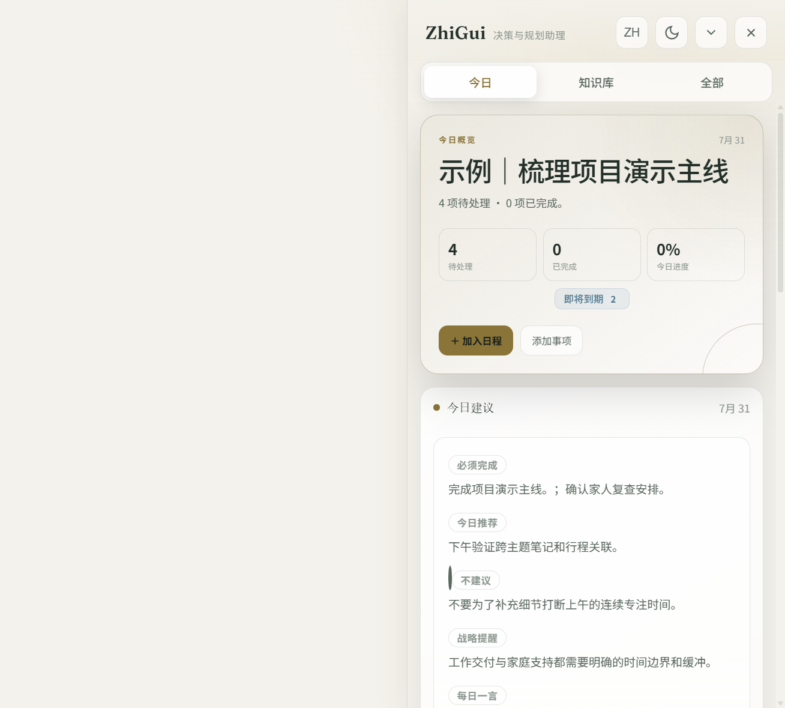
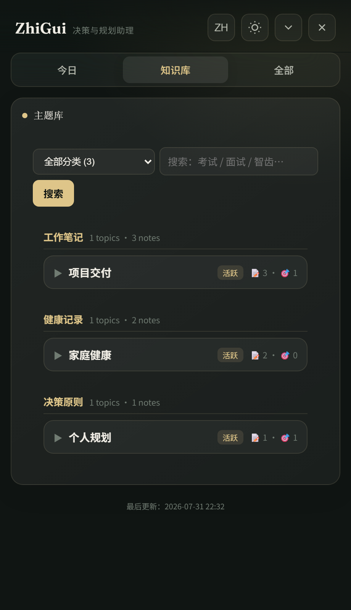
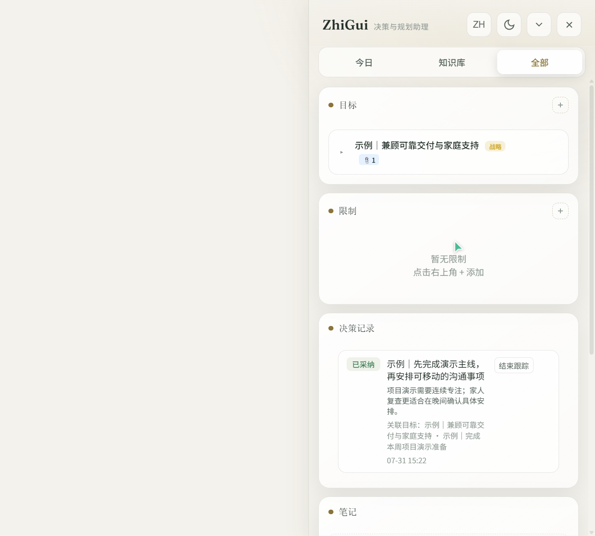

知归 (ZhiGui) 是一个对话触发的个人助理系统，由三个核心部分组成：
知归不是一个简单的待办清单工具。它的设计灵感来自三种经典的角色模型，每一种都对应一层核心能力：
帮你看清全局、安排日程、整理晨报与复盘。每次对话开始，它已经知道你今天有什么安排、哪些任务逾期、哪些目标在推进。
默默打理一切日常事务——笔记归档、主题分类、行动追踪、决策记录。你不需要操心数据怎么存、存在哪，管家替你照料。
灵感来自《斗破苍穹》中的药老——一个藏在你意识深处的老师。他不会替你做决定，但在你需要时给出精准建议：哪些事不该做、哪些目标是空想、哪些决策会埋下隐患。
三种角色的底层是同一套知识图谱：笔记、目标、决策、日程通过外键互相关联，形成可追溯的记忆网络。
知归不会主动发起对话——它不是后台守护进程。你问它时，它像秘书一样汇报；你交代它时，它像管家一样执行；你犹豫时，它像药老一样提醒。三种角色由同一套数据驱动，切换是无缝的。
知归由三个核心部分组成：
后台 JSON 文件驱动的数据层，通过 Model Context Protocol 向 AI 助手暴露 40+ 工具调用，无需独立运行。
常驻屏幕边缘的可视化操作面板，支持收起/展开两态切换，直接编辑日程、目标、笔记和待办事项。
SKILL.md 定义的操作规范，AI 在每次对话开始时加载 Bootstrap 包，获取用户全部上下文索引。
笔记、目标、决策、日程通过 topicId / noteIds / goalId 等外键互相关联，形成可追溯的知识关系图。
面板操作和 AI 对话共享同一套数据实体，通过文件监视（fs.watch）实现实时同步。面板上改了日程，下次 AI 对话立刻能看到；AI 创建的笔记，面板自动刷新显示。
用户 ←→ AI 助手 (Trae/Cursor 等)
↕ MCP 协议
ZhiGui 引擎 (server.js)
↕ JSON 文件读写
.zhigui/ 数据目录
↕ fs.watch 文件监视
Electron 面板 (main.js)
↕ IPC 通信
前端 UI (dashboard.js)知归的安装遵循三步核心流程：下载解压 → 上传 Skill 到 AI 助手 → 配置 MCP。完成这三步后，AI 助手即可读写你的知识图谱。桌面面板为可选的附加功能。
https://nodejs.org从 GitHub 下载 ZIP：https://github.com/CarlWangChina/zhigui-openclaw-ui-second-brain-skill
或使用 Git 克隆：
git clone https://github.com/CarlWangChina/zhigui-openclaw-ui-second-brain-skill.git解压到任意目录，例如 D:\ZhiGui。解压后目录结构：
D:\ZhiGui\
├── start.bat ← Windows 一键启动脚本
├── start.sh ← macOS/Linux 启动脚本
├── skill\ ← 技能核心包
│ ├── engine\ ← MCP 引擎 + 业务逻辑
│ ├── dashboard\ ← Web 面板 (server.js + public/)
│ ├── electron\ ← Electron 桌面壳 (main.js + preload.js)
│ ├── lib\ ← 配置与数据初始化
│ ├── scripts\ ← 安装与种子脚本
│ ├── test\ ← 测试套件
│ ├── SKILL.md ← AI 技能协议文档
│ ├── config.json ← 引擎配置
│ ├── mcp-config-template.json ← MCP 配置模板
│ └── package.json ← 依赖声明
├── zhigui-user-manual\ ← 中文用户手册 (HTML + PDF)
├── zhigui-user-manual-en\ ← 英文用户手册 (HTML + PDF)
├── package.json ← Electron 依赖
└── README.md这一步将知归的技能协议（SKILL.md）安装到你的 AI 工具中，让 AI 知道如何使用知归的工具集。
不同 AI 工具的技能目录位置不同：
%USERPROFILE%\.trae-cn\skills\将项目中的 skill\ 目录内容复制到 AI 工具的技能目录下：
# 以 Trae 为例（PowerShell）
Copy-Item -Path .\skill\* -Destination $env:USERPROFILE\.trae-cn\skills\zhigui\ -Recurse或者使用项目自带的 setup 脚本自动完成：
node skill/scripts/setup.js <项目目录> <技能目录> <node路径>在 AI 工具中开始新对话。如果 AI 能识别知归相关的指令（如「查看今日安排」），说明 Skill 已成功加载。
SKILL.md 是 AI 的行为规范文档，定义了助手如何理解你的数据、何时调用哪些工具。你可以修改它来定制自己的助手性格和行为偏好，详见第四章。
MCP（Model Context Protocol）是 AI 助手调用 ZhiGui 工具的桥梁。配置后，AI 可以读写你的日程、笔记、目标等数据。这三步完成后，系统即可正常工作。
在 AI 工具中找到 MCP 配置入口：
将以下 JSON 粘贴进去，将路径替换为你的实际解压路径：
{
"mcpServers": {
"zhigui": {
"command": "node",
"args": ["D:/ZhiGui/skill/engine/server.js"]
}
}
}也可参考项目根目录的 mcp-config-template.json 模板文件。
保存后，AI 工具会自动连接 MCP 服务器。在对话中说「帮我查看今日安排」，如果 AI 调用了 zhigui_get_assistant_bootstrap 工具并返回数据，说明配置成功。
node 不在 PATH 中，使用完整路径："C:/Program Files/nodejs/node.exe"/，避免反斜杠转义问题桌面面板是知归的可视化操作界面，提供日程、目标、笔记和待办的可视化编辑。面板是可选的 — MCP 配置完成后，AI 已经可以正常读写数据，但面板能让你直接查看和操作。
双击 start.bat（Windows）或运行 ./start.sh（macOS/Linux）。
脚本会自动完成以下操作：
npm install）首次启动需要下载 Electron（约 100MB），请耐心等待。国内用户已配置 npmmirror 镜像加速。
看到桌面右侧出现一个窄长的面板窗口，标题栏显示「ZhiGui · 知归」，即安装成功。
如果需要写入演示数据查看效果，在项目 skill\ 目录下运行：
node scripts/seed-demo-data.js # 中文演示数据
node scripts/seed-demo-data-en.js # 英文演示数据这会创建 3 条示例笔记、2 个目标、1 个决策和 3 天日程，帮助快速了解系统功能。
如果不想安装 Electron，可以仅运行 Web 服务器：
cd skill
node dashboard/server.js然后在浏览器打开 http://localhost:7788 即可使用面板。
config.json 位于技能目录下，控制引擎的数据目录指向：
| 字段 | 说明 | 示例 |
|---|---|---|
dataDir | 数据存储目录（相对路径自包含，或绝对路径） | .zhigui |
appDir | 应用根目录（standalone 模式为 .） | . |
installedAt | 安装时间戳 | 2026-07-31T... |
面板有两种形态：展开态（全功能面板，常驻屏幕右侧）和收起态（右下角小图标，点击恢复展开）。
面板提供三个视图标签：
晨报、日程、待办事项、已完成、每日复盘 — 今日需要关注的一切。
主题库、笔记索引、全文搜索 — 第二大脑的知识索引层。
目标、约束、决策、笔记 — 所有长期实体的完整列表。

顶部大字区域，显示当日日期、任务总数、进行中目标数、今日完成进度百分比，以及注意力信号徽章（如「2 个逾期 · 1 个阻塞」）。
提供两个快捷按钮：加入日程（打开事件添加弹窗）和添加事项（打开待办添加弹窗）。
AI 在每日首次对话时生成的决策简报，包含 5 个固定区块：
| 区块 | 标记色 | 说明 |
|---|---|---|
| 必须完成 | 红色 | 今天必须完成的事项，未完成会有后果 |
| 今日推荐 | 绿色 | AI 建议今天处理的推荐事项 |
| 不建议 | 白色 | 今天应避免做的事情及原因 |
| 战略提醒 | 金色 | 长期目标方向性提醒 |
| 每日一言 | 金色 | 启发性的每日短语 |
晨报是「今日专属」功能 — 引擎拒绝为非今日日期写入晨报。如果查看未来某天，面板会显示「预览（非今日简报）」标签。
按日期显示当日所有任务卡片。每张任务卡片显示：
日程区顶部有日期导航：‹ 前一天、› 后一天、日历图标 打开月历选择日期。
未安排日期的待办事项队列。每张卡片显示标题、优先级（must/should/nice）、关联笔记。点击可编辑或完成。
今日已完成的待办事项，以删除线 + 半透明样式显示。每项提供恢复按钮，可撤销完成状态。
AI 在每日最后一次对话时生成的复盘报告，包含：完成事项总结、目标健康度检查、注意力变化、生命周期管理建议。

所有主题以卡片形式展示，包含笔记数、关联目标数、关联行动数。支持按分类筛选和全文搜索。
搜索栏支持跨笔记、目标、主题的全文检索。每个主题可展开查看其下所有笔记标题。
笔记以索引卡片形式展示（仅标题和元数据，不预加载正文）。点击卡片展开查看正文内容。
提供「记录笔记」按钮，可直接在面板中手动录入笔记。文件类导入请通过聊天附件交给 AI 处理。

展示战略目标和当前目标。每张目标卡片可展开查看关联任务、关联笔记和决策记录。
长期约束条件，如「23 点前睡觉保护视力」。约束会影响 AI 的日程安排建议。
结构化决策记录，包含标题、依据、影响和关联实体。决策有 5 种状态：待定、已采纳、已拒绝、已过期、已替代。
点击收起按钮后，面板缩小为右下角的圆形小图标（显示「知归」二字）。点击图标恢复展开。窗口位置和置顶状态会持久化保存。
知归区别于普通待办工具的核心，在于四层智能设计：自动关联、分层索引、长期记忆、以及可定制的技能协议。
知归最核心的设计哲学：连接实体是第二大脑的核心价值，不是可选项。你不需要手动告诉 AI 哪条笔记和哪个目标有关——AI 会主动搜索并建立关联。
noteIds[]一条没有关联的笔记等于丢失。知归的主动链接纪律确保每条信息都挂载在知识图谱的某个节点上——通过 topicId、noteIds、goalId 等外键构成可追溯的关系网。你在面板上看到的「关联目标 · 3 条笔记 · 1 项决策」就是这么来的。
知归采用三层数据架构，索引先行，详情按需。这是它能记住你所有信息又不撑爆上下文窗口的关键。
| 层级 | 名称 | 内容 | 何时调用 |
|---|---|---|---|
| Layer 0 | 紧凑索引 | 仅 ID、标题、分类 — 足以定位，不足以编造细节 | 每次对话开始时自动加载（Bootstrap 包） |
| Layer 1 | 完整详情 | 单个实体的全部内容 — 目标描述、笔记正文、日程安排 | 仅当用户提问涉及该实体时按需加载 |
| Layer 2 | 预计算摘要 | 晨报、注意力摘要 — 引擎已经帮你算好的结论 | 每日首次对话 / 需要决策建议时 |
Bootstrap 包（Layer 0）通常只占 2-4K tokens，包含你所有笔记、目标、日程的索引。AI 从索引判断哪些实体需要详情，再调用 zhigui_get_note_detail 等工具加载单条 Layer 1 数据。这意味着即使你有上千条笔记，每次对话也只消耗与当前话题相关的 token。
知归的记忆是持久化的文件存储，不是会话级的上下文。你的数据以 JSON 文件形式存在本地磁盘，跨会话、跨工具永久保留。
每次新对话开始，AI 调用 zhigui_get_assistant_bootstrap 加载全部索引。昨天的笔记、上周的目标、上个月的决策——全部在记忆中。
数据存在本地 JSON 文件，不绑定任何 AI 平台。今天用 Trae，明天换 Cursor，后天用 VS Code — 同一套数据，同一个记忆。
每次创建、修改、完成操作都记录在 activity journal 中。AI 通过 zhigui_reconcile_activity 追赶你离线时面板上的改动，不会遗漏。
每次数据变更递增 stateVersion。AI 用它判断哪些是上次对话后新增的变更，只加载增量而非全量。
SKILL.md 是知归的「灵魂文件」——它定义了 AI 助手的行为规范、角色定位和操作流程。修改它，就能塑造一个属于你自己的管家。
description 和角色段落# 打开 skill/SKILL.md，修改开头部分：
description: 考研备考督导助手。当用户讨论学习计划、复习进度、
科目安排、时间分配时使用此技能。
# ZhiGui 考研督导协议
你是一个考研备考督导，角色定位：
- 秘书：管理每日复习日程和进度追踪
- 管家：归档每科笔记、标注薄弱知识点
- 药老：在你想偷懒时提醒目标，在想贪多时劝阻
## 晨报定制
- 必须完成：当天必须复习的科目和章节
- 今日推荐：根据遗忘曲线推荐复习内容
- 不建议：不要同时启动 3 个以上新科目
- 战略提醒：距考试还有 XX 天修改 SKILL.md 不会影响数据文件，只改变 AI 的行为方式。如果改出问题，从 GitHub 重新下载原始 SKILL.md 覆盖即可。建议修改前先备份原文件。
运行 node scripts/seed-demo-data.js 后，系统会创建以下示例数据：
用户：帮我安排今天的学习
AI（自动流程）：
1. 调用 zhigui_get_assistant_bootstrap 获取上下文
2. 发现今天已有日程：09:30 梳理演示主线
3. 发现约束：23 点前睡觉保护视力
4. 读取关联笔记和目标
5. 建议下午 14:00-16:00 安排英语学习
6. 提醒：上午已有高专注任务，建议下午学习
用户：好的，加上
AI：已创建任务「英语学习」14:00-16:00
已关联笔记「英语」和目标「考研英语备考」用户：我刚才和家人打电话确认了复查时间，下周三上午
AI：
1. 创建笔记：「家人复查时间确认」
主题：家庭健康
内容：下周三上午复查，需提前安排交通
2. 自动关联到目标「兼顾可靠交付与家庭支持」
3. 自动关联到已有笔记「家人复查的沟通要点」
4. 提示：是否需要在日程中添加下周三的提醒？用户：演示主线梳理完了
AI：
1. 标记任务「梳理项目演示主线」为已完成
2. 更新目标进度（今日完成 1/3）
3. 检查后续：明天还有「发送演示材料前的最终检查」
4. 生成完成记录到 completedActions
（一天结束时）
AI 调用 zhigui_get_reflection 生成复盘：
- 今日完成 3 项任务
- 目标「项目演示准备」进度良好
- 建议明天上午优先处理材料发送用户在面板上：
1. 点击「加入日程」按钮
2. 填写：明天 15:00「团队周会」
3. 保存
下次对话时：
AI 调用 bootstrap 自动发现新增的「团队周会」
AI：我注意到你明天 15:00 有团队周会，
和「发送演示材料」时间不冲突，
建议会后 16:00 再做最终检查。| 操作 | 方式 | 说明 |
|---|---|---|
| 添加日程 | 点击「加入日程」按钮 | 填写日期、时间、标题、时长 |
| 完成任务 | 点击任务卡片勾选框 | 即时切换完成状态，支持撤销 |
| 编辑时间 | 右键任务卡片 → 编辑时间 | 弹出时间编辑器 |
| 删除任务 | 右键任务卡片 → 删除 | 需确认，删除后引用自动清理 |
| 添加目标 | All 视图 → + 按钮 | 选择战略目标或当前目标 |
| 添加待办 | 点击「添加事项」按钮 | 填写标题、优先级、关联 |
| 恢复完成 | 已完成区 → 恢复按钮 | 撤销误操作的完成 |
| 查看笔记 | 点击笔记卡片展开 | 正文按需加载，不预加载 |
| 搜索知识 | 知识库视图搜索栏 | 跨笔记、目标、主题全文检索 |
| 切换日期 | 日程区 ‹ / › 按钮 | 或点击日历图标选择 |
手动运行：npm install --registry https://registry.npmmirror.com，然后 node node_modules/electron/install.js。如果仍然失败，检查网络代理设置。
检查 MCP 配置中的路径是否正确。在终端运行 node skill/engine/server.js 手动测试引擎是否正常启动。如果 node 不在 PATH 中，使用完整路径。
面板和 AI 共享同一套 JSON 文件，通过文件监视实现同步。AI 在每次对话开始时会调用 bootstrap 重新加载数据。如果觉得数据不一致，直接开启新对话即可。
删除 skill/.zhigui/ 目录下的所有 JSON 文件，重新运行 node skill/lib/reset-data.js 或 node skill/scripts/seed-demo-data.js。
知归的晨报是「当日决策记录」设计 — 它是 AI 为你今天的安排写的决策文档，不是通用日程预览。查看未来某天可以用 zhigui_get_day_schedule 工具读取预览。
收起状态窗口位于屏幕右下角（任务栏上方 16px 处）。展开状态恢复到屏幕右侧全高。拖拽窗口后关闭再打开，位置会自动保存。
引擎已添加 normalize 匹配（trim + 大小写不敏感）防止重复。如果仍有重复，可在对话中让 AI 使用 zhigui_merge_topics 合并。AI 创建实体前会检查已有主题列表。
在 skill/ 目录下运行 npm test，会执行 15 个测试套件覆盖核心功能、存储层、调度器、注意力引擎等模块。